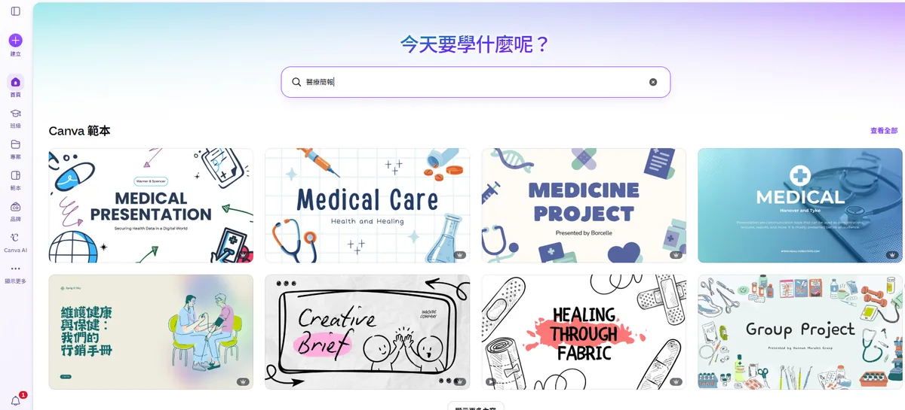
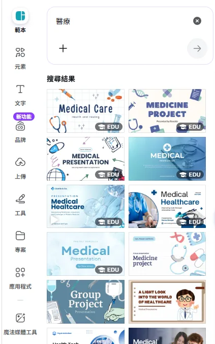
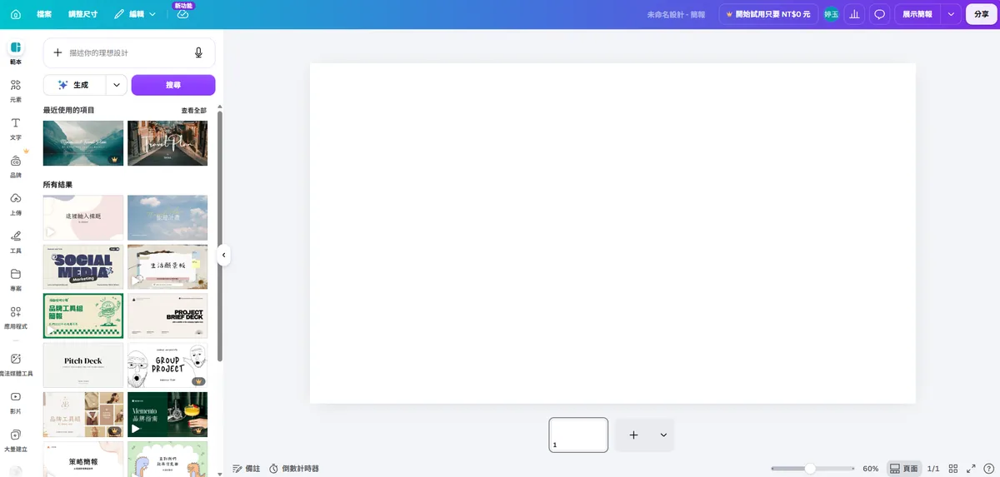
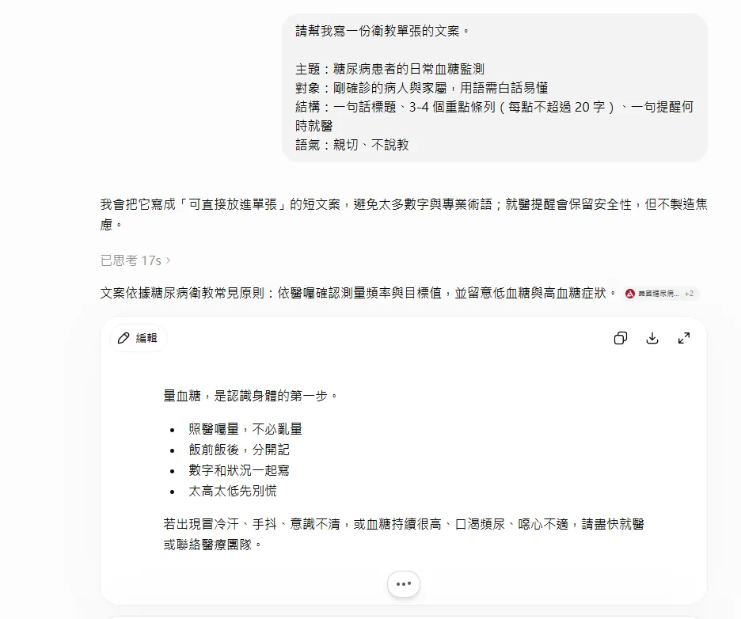
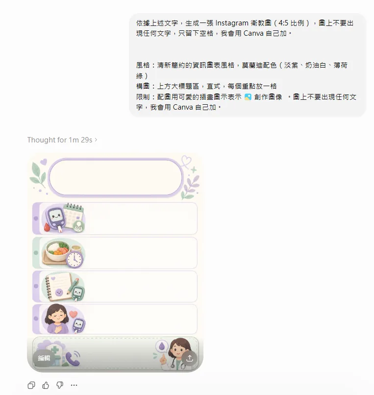
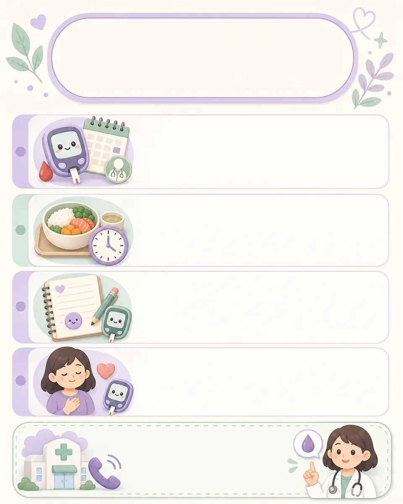
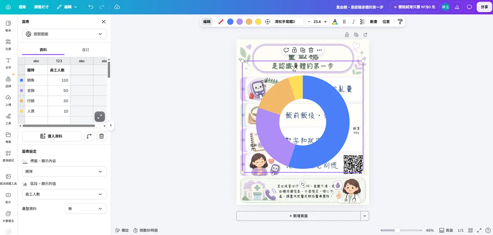

- 這頁教什麼：Canva 免費版與 Pro 版比較、模板系統、10 分鐘上手流程、排版三原則，以及如何把 AI 生成的無文字圖片透過 Canva 疊上繁體中文字做成衛教單張。
- 適合誰：已用 Part 4 生成無文字插圖、需要排版加字完成成品的讀者，不需要設計背景。
- 注意：含病人姓名、病歷號或可辨識影像的檔案一律不可上傳到 Canva；免費素材的商用授權也要在使用前逐一確認。
Canva 是什麼
Canva 是模板拖拉式的線上設計工具 — 選一個模板、換掉裡面的圖片和文字，就能做出一份看起來很專業的作品。不需要學 Photoshop、不需要懂排版理論、不需要美感天份。
元素用滑鼠拖拉調整位置，字型、顏色、大小都是點選式操作，沒有程式碼。
上百萬個現成模板，涵蓋簡報、海報、社群貼文、名片等各種尺寸。
Canva 也有 AI 生圖功能，但本課把它定位在「排版加字」— 這部分對繁體中文支援完整、字型選擇多；圖像內容交給 Part 4 的專門生圖工具。
作品自動存雲端，可以分享連結給同事一起編輯，或直接匯出給對方用。
免費 vs Pro
📅 資訊更新於 2026 年 7 月 — 以官方公告為準。
| 方案 | 月費 | 儲存空間 | 適合 |
|---|---|---|---|
| 免費 | $0 | 5 GB | 偶爾做幾張圖，模板夠用 |
| Canva Pro | 約 $15／月（年繳較便宜） | 100 GB | 常態性製作內容、需要 AI 功能與去背 |
模板系統
Canva 的模板依「用途」分類，選對尺寸類別是第一步：
A4 直式（210×297mm），適合列印張貼於候診區、病房。搜尋「海報」或「傳單」模板。
16:9 橫式，適合科內教學、晨會報告。搜尋「簡報」模板，通常已內建轉場動畫。
4:5 或正方形 1:1，適合衛教圖卡、活動宣傳。IG 限時動態則用 9:16。
比衛教單張更大的尺寸（如 A3、A2），適合現場立牌、大型活動看板。
新建作品時，Canva 首頁的搜尋框直接打用途（例如「衛教海報」「醫療簡報」），會自動帶出對應尺寸的模板選項，不用自己記尺寸數字。


10 分鐘上手
Canva 的編輯畫面只需要認識四個區域，之後所有操作都在這四區之間進行：
素材的來源 — 設計（換模板）、元素（圖示、形狀、圖表）、文字、上傳（放你自己的圖片）都在這裡，點選或拖進畫布即可使用。
點選畫布上的任何東西，工具列就會變成它的設定 — 選到文字出現字型字級，選到圖片出現濾鏡裁切。找不到設定時，先確認有沒有點選到對象。
作品本身。元素直接用滑鼠拖拉移動、拉角落控制點縮放，點兩下文字即可編輯內容。
完成後的出口 — 下載檔案、複製協作連結、直接列印都收在這顆按鈕裡。

認識介面後，照這五步完成你的第一份作品：
首頁搜尋框輸入「衛教海報」，挑一個版面配置接近你需求的模板點開 — 挑「架構」不用挑「顏色」，配色之後都能改。
左側「上傳」把圖片傳進 Canva，再把它拖到模板原有的圖片上放開 — 會自動替換並沿用原本的框形與大小，不用手動對位。
點兩下模板裡的文字直接改成自己的內容。中文字型建議從上方工具列的字型選單挑選明確標示繁體中文、且授權允許對外使用的字型（例如思源黑體、清松手寫體這類開源字型），避免預設英文字型顯示中文時筆畫怪異。
拖曳元素時畫面會出現粉紅色對齊輔助線，跟著線放開就能對齊其他元素。改壞了隨時 Ctrl+Z（Mac 為 Cmd+Z）復原，作品全程自動儲存。
右上角「分享」→「下載」，選擇檔案格式（格式怎麼挑見最後一節）。
排版三原則
沒有設計背景也能把版面做得專業 — 只要守住三條規則。模板本身已經符合這三條，你的任務是改內容時不要破壞它們：
每個元素都應該與其他元素的某條邊線對齊，不要憑感覺放。拖曳時跟著 Canva 的粉紅色輔助線走，或全選後用上方「位置」的對齊按鈕一次排好。
版面不需要填滿。內容與紙張邊緣保持距離、區塊之間留出空隙 — 資訊擠在一起時讀者哪裡都不會看，適當留白反而讓重點更醒目。
整份作品的文字只用三種大小：大標題、區塊重點、內文。層級一多讀者就抓不到閱讀順序，字級差距要明顯（例如標題是內文的兩倍以上）。
AI 功能（Magic Studio）
Canva 把站內的 AI 功能整合在 Magic Studio 底下。以下是對一般使用者最實用的幾個，其餘進階功能（如批次生成、資料圖表）保守略過不細講：
輸入一句話描述或上傳一張圖，AI 自動生成排版好的版面樣式，可再手動微調。
站內的文案生成工具，可以直接在設計畫布內生成或潤飾文字內容，不用切到 ChatGPT 再貼回來。
Canva 內建的文字轉圖片功能，效果與品質不一定穩定，建議還是用本站 Part 4 教的專門生圖工具（ChatGPT／Gemini）生圖，Canva 只負責排版加字。
一鍵去背，Pro 版功能。把 AI 生成的人物或物件圖去背後疊加到其他版面上很好用。
與 AI 生圖銜接
回顧 Part 4 提到的重點：AI 生圖工具寫中文字經常出錯或變成亂碼，通用解法是生圖時不要文字，用 Canva 補上繁體中文。這正是 Canva 在整個 AI 創作流程中的核心角色。
用 ChatGPT 或 Gemini 生成插圖，Prompt 裡明確寫「不要出現任何文字」，只要圖案與構圖。
在 Canva 新建對應尺寸的畫布，把生成的圖片當作背景或元素上傳進去。
用 Canva 的文字工具加標題、內文、聯絡資訊 — 字體、字級、顏色都能精準控制，不會有錯字風險。
文字內容如果還沒準備好，可以用下面這段 prompt 生成初稿。它是設計給 Canva 站內的 Magic Write 用的（在文字框或左側「Canva 助理」呼叫 Magic Write 後貼上），好處是文案直接生在畫布上；同一段 prompt 貼到 ChatGPT／Gemini 也通用，生成後再貼回 Canva 即可，結果沒有差別。無論用哪個工具，醫療內容都要人工核對後才能定稿。
以下是這條流程的實際操作紀錄 — 主題是「糖尿病患者的日常血糖監測」衛教圖：


前後對照 — 左邊是 AI 交出的無文字底圖，右邊是 Canva 加完字的成品：

衛教單張實用元素
除了圖和文字，衛教單張上還有兩種元素特別值得認識，都能在 Canva 內直接完成，不用另外找工具：
QR code — 連到延伸資訊
單張版面放不下的細節（完整衛教文章、掛號連結、醫院官網），放一個 QR code 讓民眾用手機掃。左側面板最下方的「應用程式」搜尋 QR code，輸入網址就會生成圖案，拖到版面角落即可。
圖表 — 數據視覺化
要呈現數據（例如接種率變化、血糖目標區間）時，不用在 Excel 做圖再截圖 — 左側「元素」搜尋「圖表」，選長條圖或圓餅圖後直接在右側表格輸入數字，圖表即時更新，顏色也能配合整體版面調整。

醫療應用範例
AI 生成無文字插圖 → Canva 選 A4 海報模板 → 換上插圖 → 加標題「正確用藥時間」與步驟文字 → 匯出 PDF 列印張貼。
選一個簡報模板套用科室慣用配色 → 每頁貼上 AI 生成的示意圖 → 用 Magic Write 潤飾投影片重點文字 → 匯出 PPTX 或 PDF。
4:5 IG 模板 → 放入生成的插圖或圖示組 → 加金句標題 → 用「調整大小」功能一鍵複製成限時動態（9:16）版本，一次做兩種尺寸。
團隊模板複用
延續開頭的 Order Set 類比 — 套餐醫囑的價值在於「建好一次、全科使用」。你花心思做好的第一份衛教單張，也應該變成科內的共用起點，之後同事只要換圖改字，配色與版面自動一致：
右上角「分享」複製連結傳給同事，對方開啟後用「檔案 → 建立副本」以你的設計為起點修改，不會動到你的原檔。
付費方案可把設計發佈成正式範本、搭配品牌套件固定科室的配色與字型，成員從範本新建作品時樣式自動套用 — 常態性產出衛教內容的科室才需要。
匯出格式與授權注意
右上角「分享 → 下載」時的格式選擇，依用途決定：
| 用途 | 格式 | 注意 |
|---|---|---|
| 列印張貼（衛教單張、海報） | PDF（列印） | 解析度最高的選項；送印刷廠時勾選「裁切標記和出血」 |
| 螢幕觀看、LINE 傳送、網頁 | PNG | 畫質與檔案大小的平衡最好；照片為主的內容可改用 JPG 縮小檔案 |
| 簡報之後要回 PowerPoint 修改 | PPTX | Canva 的中文字型 PowerPoint 端不一定有，匯出後會被替換 — 開啟後逐頁檢查版面 |
| 去背素材疊到其他設計上 | PNG（透明背景） | 「透明背景」選項為 Pro 功能 |
- 免費素材授權範圍 — Canva 圖庫的免費素材大多可商用，但部分素材僅限個人使用或需標註來源，使用前點開素材右下角的授權說明確認，尤其是要用在對外發布或印刷品時。
- 病人資料絕對不上傳 — 任何含病人姓名、病歷號、可辨識影像的檔案，都不可以上傳到 Canva 這類雲端服務。衛教內容只能放通用資訊，不放個案資料。
- Pro 版素材需訂閱有效期 — 用 Pro 版付費素材做的作品，若訂閱到期，已下載的檔案仍可使用，但要注意續作或修改時是否還有授權。
一鍵發布成網頁
Canva 的設計除了下載成檔案，也可以直接發布成一個網頁。做好的衛教圖文、活動宣傳頁、科室介紹，不需要再另外找地方放 — 點右上角「分享 → 發布為網站」，Canva 會產生一個網址，任何人點開就能瀏覽。建立設計時直接搜尋「網站」類型的模板，會得到適合手機捲動瀏覽的直式版型。
📅 資訊更新於 2026 年 7 月 — 以官方說明為準：免費版可發布 5 個網站，網址是 my.canva.site 的子網域；想用自己的網域（或直接向 Canva 購買網域）需要 Pro。
Canva 發布的網頁本質上是「一張會捲動的設計稿」— 視覺精美、製作快速，適合內容固定的頁面。但它放不進程式碼，所以需要互動功能（查詢工具、計算機、AI 幫你寫的網頁）時就派不上用場 — 這類需求見下一課 GitHub Pages 架站。